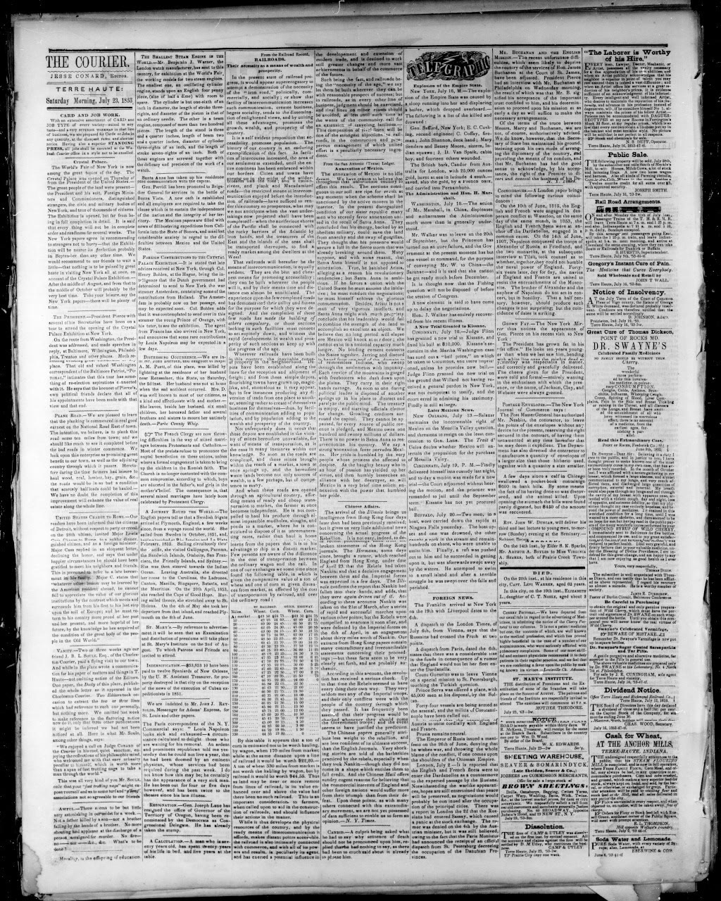

HN HN-164 · July 23, 1853 · Transportation & Maritime > Shipwrecks, Maritime Accidents & Losses > Collisions
1853 New York Herald calls wrecked steamer Empire, but student seed says Empire State.
Class: Metadata/identity (M)
Recorded difference/concern: 1853 New York Herald calls wrecked steamer Empire, but student seed says Empire State.
Assessment: May be name variation OR another vessel; do not equate yet.
Source links: https://www.historyworm.com/gazete/new_york_herald/1853-07-18/1
Authentic images retrieved from Hoosier State Chronicles (Indiana State Library). Article crops are located using the archive's own OCR word coordinates and rendered at native crop resolution; article clips are assembled from the archive's own article-block images; page images marked "archive tiles" are stitched from the archive's own tiled page service at its 256-px tile cap; page images marked "issue PDF" are single pages rasterised from the archive's own issue PDF, with the page chosen by matching the headline against the PDF's text layer; page scans are reduced-size access renditions. No images were generated, mocked, or retouched.

Not yet acquired. Queued for provider-specific acquisition testing (see source-acquisition manifest).
URL (preserved verbatim): https://newspapers.library.in.gov/?a=d&d=WACO18530723.1.2
Saved research report: Historical_Newspaper_Event_Research_153-177_2026-10-22.md
Evidence note: A newspaper report means a historical publication made a claim; it does not establish that claim as fact. Contemporary reporting is separated from later scholarly context and our own assessment.